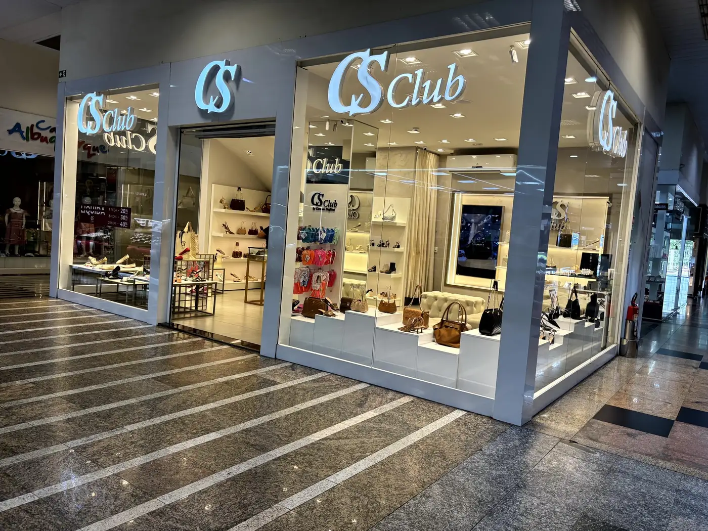

Sobre o Gama Shopping
Um ponto de referência para toda a região

1997ano de inauguração
O Gama Shopping foi inaugurado em outubro de 1997 e é um dos principais centros de compras do Gama e região, abrangendo uma área com mais de 130 mil habitantes.
O Gama Shopping conta com um mix de mais de 250 lojas, ampla praça de alimentação, estacionamento e atendimento ao cidadão com o Na Hora, trazendo conforto e comodidade para os seus clientes. E agora está todo repaginado, com diretoria nova, fazendo grande sucesso!
Em constante atualização, sempre cheio de novidades, o Gama Shopping é um ponto de referência para toda a região do entorno: um espaço democrático que visa atender a todos.
250+lojas e quiosques
26segmentos
130 milhabitantes na região
29anos de história
Nossa história
De 1997 até hoje
- Outubro de 1997Inauguração do Gama Shopping no Setor Central do Gama.
- CrescimentoO mix chega a mais de 250 lojas, com praça de alimentação e estacionamento.
- Na Hora · GamaO atendimento ao cidadão passa a funcionar dentro do shopping.
- HojeTodo repaginado, com diretoria nova e uma comunidade de 35 mil seguidores.
Institucional
Diretoria
LR
Levi RodriguesAdministrador
R
RonaldoVice-administrador
R
RicardoFinanceiro
DR
Daniel RodriguesMarketing
C
Eraldo Ramos, Wilson e SamiaConselheiros